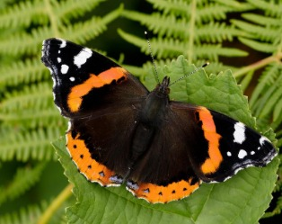
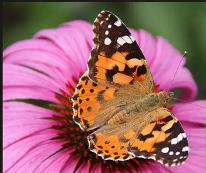
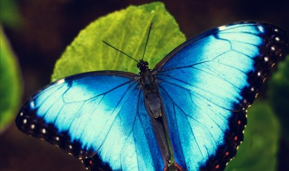
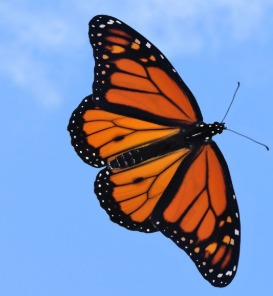

Butterflies are insects with colorful wings. They start life as caterpillars and later change into butterflies. I think they are one of the nicest things to see in a garden.
Here are some pictures of butterflies:




Butterflies taste with their feet, and many of them drink nectar from flowers. They also help flowers by carrying pollen from one place to another.